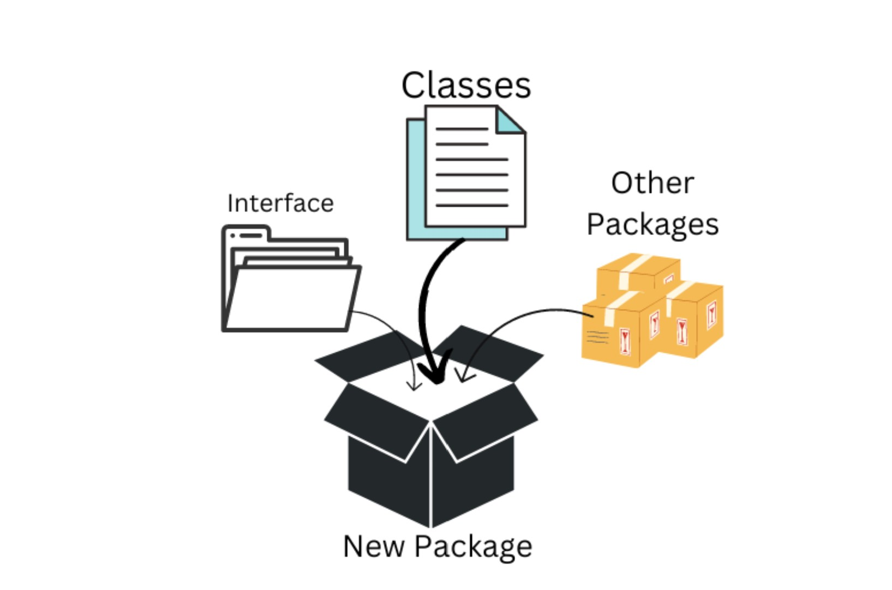
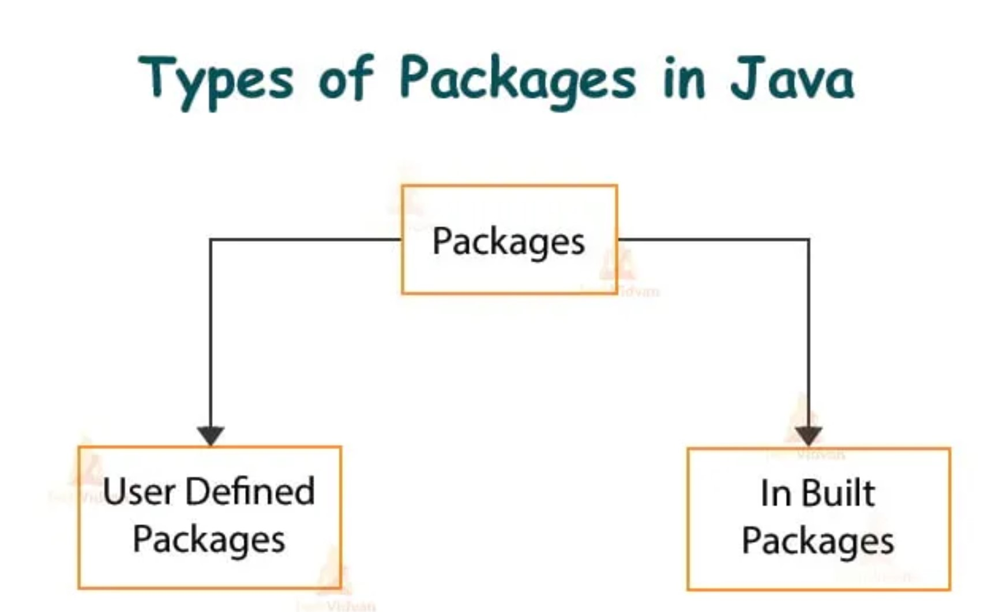

Java Packages Access Demo
NBKRIST II CSE A
Hari Babu Mutchakala
Packages are an essential feature in Java for organizing large-scale applications. Understanding how to create, import, and manage packages is crucial for efficient Java programming
Packages in Java are used to group related classes, interfaces, and sub-packages into a namespace. They provide a way to organize files in larger projects, avoid name conflicts, and manage access control. Packages also help in making code modular and manageable, especially when dealing with large-scale applications.

Access Modifiers in Java
| |
Private |
NoModifier |
Protected |
Public |
| Same Class |
Yes |
Yes |
Yes |
Yes |
| Same Package |
No |
Yes |
Yes |
Yes |
| Different Package Subclass |
No |
No |
Yes |
Yes |
| Different Package Non-Subclass |
No |
No |
No |
Yes |
Access Example
Basic Examples
Finding Package Classes and Classpath
JARS

/**
1. What is a Package in Java?
2. Why Use Packages?
3. Types of Packages in Java
4. How to Create a Package?
5. Accessing Classes from Packages
6. Importing Packages
7. Sub-packages in Java
8. Package Naming Conventions
9. Java Built-in Packages
10. Example Program Using Packages
1. What is a Package in Java?
A package is a namespace that organizes a set of related classes and interfaces. Packages are used to prevent name clashes and to control the access of classes, interfaces, and methods.
Basic Definition:
package com.example.utils;
In the above example, `com.example.utils` is a package that could contain utility classes related to an application. Classes inside the package can be imported and used by other classes.
2. Why Use Packages?
1. Organizing Code: Packages help group similar functionality into modules. For example, all database-related classes can go into a `com.example.database` package.
2. Avoiding Naming Conflicts: In large projects, it’s possible to have classes with the same names. Packages provide namespaces, so two classes with the same name can exist in different packages.
3. Access Control: Java packages provide access control mechanisms. Classes, methods, and fields can have package-level visibility.
4. Reusability: Code can be organized into packages that can be reused across projects.
3. Types of Packages in Java
Java has two types of packages:
1. Built-in Packages: These are provided by the Java API (e.g., `java.util`, `java.io`, `java.lang`).
2. User-defined Packages: These are created by users to organize their classes and interfaces.
4. How to Create a Package?
To create a package in Java, you use the `package` keyword. The package statement must be the first line in the source file (excluding comments).
Creating a Package:
// File: com/example/HelloWorld.java
package com.example;
public class HelloWorld {
public void greet() {
System.out.println("Hello from the com.example package!");
}
}
In this example:
- The `package com.example;` statement defines that the class `HelloWorld` belongs to the `com.example` package.
- The folder structure should mirror the package name (`com/example/`).
5. Accessing Classes from Packages
To access a class from a package, the fully qualified name of the class (including the package name) should be used, or the class should be imported.
Accessing Without Import:
com.example.HelloWorld hello = new com.example.HelloWorld();
hello.greet();
Accessing With Import:
You can import the class to avoid writing the full package name every time:
import com.example.HelloWorld;
public class Main {
public static void main(String[] args) {
HelloWorld hello = new HelloWorld();
hello.greet();
}
}
6. Importing Packages
Java provides the `import` statement to import classes or entire packages.
1. Importing a Single Class:
import com.example.HelloWorld;
2. Importing All Classes in a Package:
import com.example.*;
In the second example, all classes within the `com.example` package will be imported.
7. Sub-packages in Java
Java supports sub-packages, which are simply packages within other packages. There is no special syntax for sub-packages; they are treated like regular packages, but the hierarchy is created by adding dots in the package name.
Example:
package com.example.utils;
The `utils` package is a sub-package of `com.example`.
You can nest packages as deeply as required:
package com.example.database.connection;
This would represent a `connection` package under `database` under `com.example`.
8. Package Naming Conventions
Java follows certain conventions for naming packages to ensure uniqueness and clarity:
1. Reverse Domain Name: Use your domain name in reverse as the base of your package names. For example, if your domain is `example.com`, start your package with `com.example`.
2. Lowercase Names: Use lowercase letters to avoid conflicts with class names.
3. Meaningful Names: Use descriptive and meaningful names to reflect the content of the package.
Example:
package com.mycompany.product.service;
9. Java Built-in Packages
Java comes with several built-in packages that provide a wide range of functionalities. Some common built-in packages are:
- java.lang: Provides classes fundamental to the Java language (automatically imported).
- java.util: Contains utility classes, including collections framework, date, time facilities, and more.
- java.io: Contains classes for input/output operations (e.g., file handling).
- java.net: Contains classes for networking operations.
- java.sql: Contains classes for database access and processing.
Example of Using Built-in Packages:
import java.util.ArrayList;
public class BuiltInExample {
public static void main(String[] args) {
ArrayList list = new ArrayList<>();
list.add("Java");
list.add("Python");
System.out.println(list);
}
}
10. Example Program Using Packages
Here’s a full example of creating and using user-defined packages.
Step 1: Define a Package
Create a file `com/example/greetings/Greeter.java`:
package com.example.greetings;
public class Greeter {
public void sayHello() {
System.out.println("Hello from the Greeter class!");
}
}
Step 2: Create Another Class to Use This Package
Create another file in a different package `com/example/app/MainApp.java`:
package com.example.app;
// Importing the Greeter class from com.example.greetings
import com.example.greetings.Greeter;
public class MainApp {
public static void main(String[] args) {
Greeter greeter = new Greeter();
greeter.sayHello();
}
}
Step 3: Compiling and Running
To compile and run this example, follow these steps:
1. Compile:
Navigate to the root directory and compile both files:
javac com/example/greetings/Greeter.java
javac com/example/app/MainApp.java
2. Run:
Run the `MainApp` class:
java com.example.app.MainApp
Output:
Hello from the Greeter class!
Example:
/**
* This is the com.example.app package for the application.
*/
package com.example.app;
This file helps in adding package-level JavaDocs and metadata.
Benefits of Using Packages in Java
1. **Namespace Management**: Packages help avoid
name conflicts by grouping related classes and interfaces together.
2. **Access Protection**: Packages provide
controlled access to classes and members, allowing for better encapsulation.
3. **Modularity**: Packages promote modular
programming by allowing developers to organize code into distinct units.
4. **Reusability**: Classes in packages
can be easily reused across different projects, improving code maintainability.
For more information, you can refer to the official documentation:
Java Packages Documentation